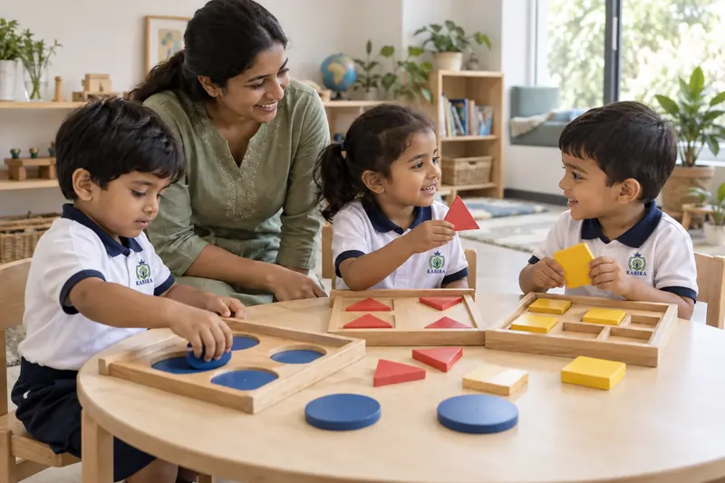

Pre-reading and phonological awareness
Rhymes, sounds and stories build the early listening skills that reading will later depend on.
NURSERY · 3+ YEARS
By three, most children have settled into the idea of school and are ready to ask "why" more often. Nursery gives that curiosity somewhere purposeful to go — through conversation, stories and hands-on discovery.
ABOUT THIS STAGE
Children at this age are becoming more expressive and more independent — they want to try things themselves, ask questions, and make connections between what they see and what they already know. Nursery at Kabira meets that curiosity with hands-on activity rather than instruction, so exploration feels like play, not pressure.
WHAT YOUR CHILD WILL BEGIN TO DEVELOP
Rhymes, sounds and stories build the early listening skills that reading will later depend on.
Sorting, counting and simple comparisons introduce number concepts through play, not worksheets.
Art, movement and group activities build coordination alongside the confidence to share ideas.
HOW LEARNING HAPPENS
A question at storytime becomes a small investigation. A pile of blocks becomes a pattern. Nursery learning happens through conversation and doing, with a teacher nearby to extend a child's thinking rather than direct it.

EXPERIENCES AT THIS STAGE
Talking through a story or picture together, building vocabulary, listening and the confidence to describe things.
Simple activities with shapes, colours and objects that build observation, comparison and early reasoning.
Colouring, clay and simple art and craft, developing fine-motor control alongside self-expression.
Shared games and early turn-taking with classmates, building cooperation and social confidence.
A three-year-old who shares a crayon without being asked is learning something just as important as a new word. We treat both as real progress.
MOVING FORWARD
As exploration becomes more structured, children are ready for LKG — where early literacy and numeracy take clearer shape.
Coming from Pre-Nursery? See the Pre-Nursery programme
NURSERY QUESTIONS
Nursery is for children who are approximately 3 years and older. Children joining directly, without prior Pre-Nursery experience, are welcome too.
Early language and pre-reading skills, early numeracy through play, creative activities, and growing confidence in group settings.
By building the vocabulary, listening skills and early number sense that LKG's more structured phonics and numeracy activities build upon.
READY WHEN YOU ARE